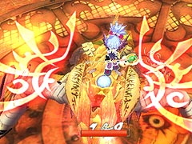
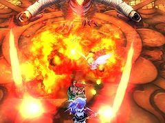
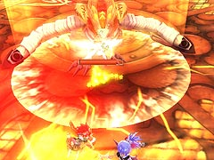
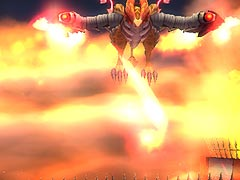
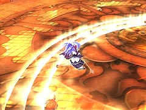
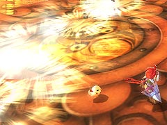

目次 > ゲームについて > 日本Falcom 攻略 > ZWEI II > ボス戦 > ファブニール
らんの眼
ZWEI II (ツヴァイ 2、ZWEI II Plus)
| 概要 | 情報 | 攻略チャート |
| フード交換 | ペットについて | ボス戦 |
| 敵キャラ一覧 | ハンターランク | G-コロッセオ |
| アイテム一覧 | ガジェット一覧 | トレジャー一覧 |
| ダンジョン一覧 | クリアデータ特典 | Plusの追加要素 |
| ZWEI II攻略へ | 目次へ戻る |
| ファブニール 地上 |
| 地上にいるファブニールに対しては、ラグナ・アルウェンどちらでも対処可能です。  とにかく、近づくなりなんなりしてボスの頭を攻撃すればいいです。この際、後ろに回り込んで背中に乗ることができれば、一方的に攻撃できます。  ボスの攻撃として、口と翼から炎を吐く攻撃があります。これは後ろへ下がるだけでは攻撃を食らう可能性が高いので、左右どちらかに逃げた方がいいです。  また、ジャンプしての衝撃波がありますが、こちらはボスの動きを注意して見ていれば、簡単に対処できます。 それともう一つ、しっぽを振り回す攻撃があり、こちらは常にある程度距離を取っていれば問題ありません。しかし、背中に乗っている場合は、振り落とされてダメージを受けることがあるので注意してください。 |
| ファブニール 空中 |
| ファブニールが空を飛んでいるときは、アルウェンの魔法しかダメージを与えられません。「無垢の魔法」か「焦熱の魔法」を使えばいいのですが、ファブニールの動きが早く、かつ攻撃も強烈なので、ひたすらよけて、地上に戻ってきてから攻撃するのも手です。 また、空を飛ぶ前にあらかじめ背中に乗っておけば、振り落とされるまでは攻撃を食らう心配がないので、できるだけ乗るようにするといいです。  ファブニールが空中にいるときの攻撃としては、地上でも使った炎を吐く攻撃があります。これは、地上と同じようによければ何とかなります。  次に、竜巻を起こしてからの衝撃波ですが、これはダメージ範囲が広く、しかも3発ほど連続で使ってくるので、タイミングよくジャンプできないと、連続でダメージを食らう危険があります。  最後に、突進を使った衝撃波ですが、これはいまいちよけ方が分からないので、自分で努力してよけてください。 |
| 概要 | 情報 | 攻略チャート |
| フード交換 | ペットについて | ボス戦 |
| 敵キャラ一覧 | ハンターランク | G-コロッセオ |
| アイテム一覧 | ガジェット一覧 | トレジャー一覧 |
| ダンジョン一覧 | クリアデータ特典 | Plusの追加要素 |
| ページの上部へ | ZWEI II 攻略へ | 目次へ戻る |